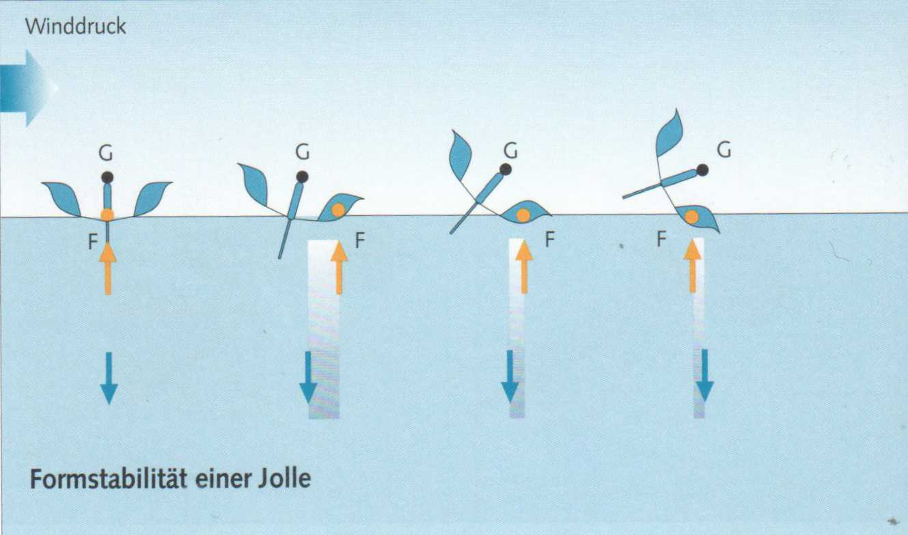
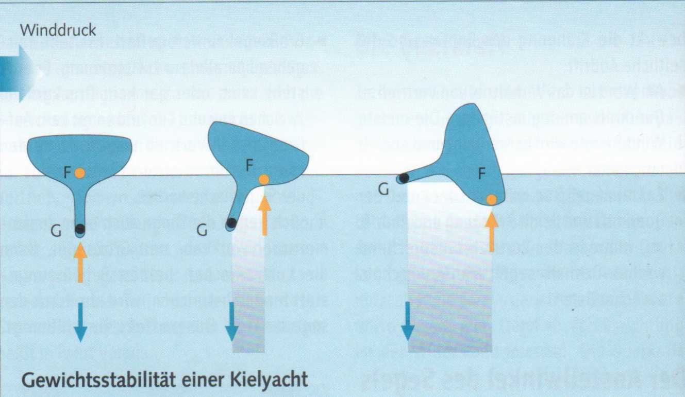

Unter der Stabilität eines Bootes versteht man die Fähigkeit, sich aus einer gekrängten Lage wieder aufzurichten. In ihren Stabilitätsverhältnissen unterscheiden sich Jollen erheblich von Kielbooten.
Jollen besitzen ausschließlich Formstabilität, die sich aus der mehr oder minder breiten Form des Rumpfes ergibt. Sie allein ist nur gering. Die zusätzlich erforderliche Stabilität beim Segeln erbringt der »lebende Ballast«, das Gewicht der Mannschaft.
► Die Stabilität einer ballastlosen Jolle hängt wesentlich vom Körpergewicht der Mannschaft ab. Je weiter das Mannschaftsgewicht nach Luv gebracht wird, umsolängerwird deraufrichtende Hebelarm, umso höher ist die Anfangsstabilität. Über einen gewissen Krängungswinkel hinaus jedoch wirkt der lebende Ballast in die entgegengesetzte Richtung: Das Boot kentert.
► Eine Jolle hat eine geringe Endstabilität.

Kielboote beziehen ihre Stabilität im Wesentlichen aus dem tief sitzenden Kielballast, auch als toter Ballast bezeichnet. Der aufrichtende Hebelarm liegt also nicht über Wasser, wie bei der Jolle, sondern unterhalb der Wasserlinie. Das heißt, je mehr eine Kielyacht krängt, umso größer wird die aufrichtende Kraft.
► Ein Kielboot hat eine hohe Endstabilität.
Es kann unter extremen Wetterbedingungen zwar durchkentern, richtet sich danach aber wieder auf, während eine Jolle »kieloben« liegen bleibt.
Aber auch eine Kielyacht besitzt eine sich aus der Rumpfform ergebende Formstabilität. Sie macht das Boot »rank« - geringe Anfangsstabilität - oder »steif« - hohe Anfangsstabilität.

Bei der ballastlosen Jolle liegt der Gewichtsschwerpunkt (G) über dem Form- oder Auftriebsschwerpunkt (F). Zunächst wandert F nach Lee aus, wird dann aber von G »überholt«: Die Jolle kippt um.
Bei der geballasteten Kielyacht liegt der Gewichtsschwerpunkt (G) unter dem Formschwerpunkt (F). Je weiter F nach Lee wandert, umso länger wird der aufrichtende Hebelarm.